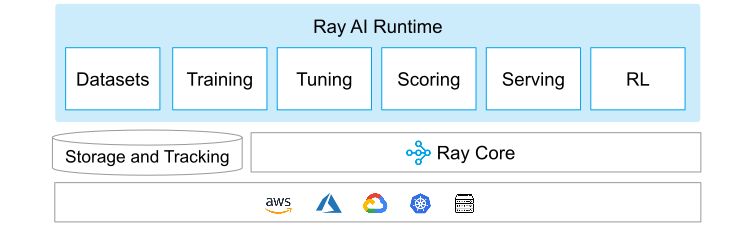
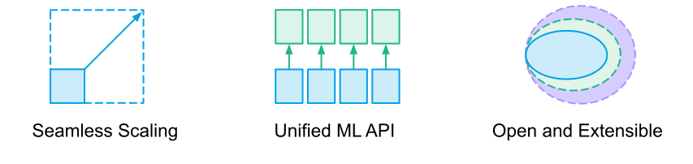
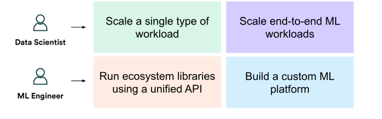

Ray AI Runtime (AIR)
Contents
Ray AI Runtime (AIR)#
Tip
AIR is currently in beta. Fill out this short form to get involved. We’ll be holding office hours, development sprints, and other activities as we get closer to the GA release. Join us!
Ray AI Runtime (AIR) is a scalable and unified toolkit for ML applications. AIR enables simple scaling of individual workloads, end-to-end workflows, and popular ecosystem frameworks, all in just Python.
AIR builds on Ray’s best-in-class libraries for Preprocessing, Training, Tuning, Scoring, Serving, and Reinforcement Learning to bring together an ecosystem of integrations.
ML Compute, Simplified#
Ray AIR aims to simplify the ecosystem of machine learning frameworks, platforms, and tools. It does this by leveraging Ray to provide a seamless, unified, and open experience for scalable ML:
1. Seamless Dev to Prod: AIR reduces friction going from development to production. With Ray and AIR, the same Python code scales seamlessly from a laptop to a large cluster.
2. Unified ML API: AIR’s unified ML API enables swapping between popular frameworks, such as XGBoost, PyTorch, and Hugging Face, with just a single class change in your code.
3. Open and Extensible: AIR and Ray are fully open-source and can run on any cluster, cloud, or Kubernetes. Build custom components and integrations on top of scalable developer APIs.
When to use AIR?#
AIR is for both data scientists and ML engineers alike.
For data scientists, AIR can be used to scale individual workloads, and also end-to-end ML applications. For ML Engineers, AIR provides scalable platform abstractions that can be used to easily onboard and integrate tooling from the broader ML ecosystem.
Quick Start#
Below, we walk through how AIR’s unified ML API enables scaling of end-to-end ML workflows, focusing on a few of the popular frameworks AIR integrates with (XGBoost, Pytorch, and Tensorflow). The ML workflow we’re going to build is summarized by the following diagram:
AIR provides a unified API for the ML ecosystem. This diagram shows how AIR enables an ecosystem of libraries to be run at scale in just a few lines of code.#
Get started by installing Ray AIR:
pip install -U "ray[air]"
# The below Ray AIR tutorial was written with the following libraries.
# Consider running the following to ensure that the code below runs properly:
pip install -U pandas>=1.3.5
pip install -U torch>=1.12
pip install -U numpy>=1.19.5
pip install -U tensorflow>=2.6.2
pip install -U pyarrow>=6.0.1
Preprocessing#
First, let’s start by loading a dataset from storage:
import ray
# Load data.
dataset = ray.data.read_csv("s3://anonymous@air-example-data/breast_cancer.csv")
# Split data into train and validation.
train_dataset, valid_dataset = dataset.train_test_split(test_size=0.3)
# Create a test dataset by dropping the target column.
test_dataset = valid_dataset.drop_columns(cols=["target"])
Then, we define a Preprocessor pipeline for our task:
# Create a preprocessor to scale some columns.
from ray.data.preprocessors import StandardScaler
preprocessor = StandardScaler(columns=["mean radius", "mean texture"])
import numpy as np
from ray.data.preprocessors import Concatenator, Chain, StandardScaler
# Create a preprocessor to scale some columns and concatenate the result.
preprocessor = Chain(
StandardScaler(columns=["mean radius", "mean texture"]),
Concatenator(exclude=["target"], dtype=np.float32),
)
import numpy as np
from ray.data.preprocessors import Concatenator, Chain, StandardScaler
# Create a preprocessor to scale some columns and concatenate the result.
preprocessor = Chain(
StandardScaler(columns=["mean radius", "mean texture"]),
Concatenator(exclude=["target"], dtype=np.float32),
)
Training#
Train a model with a Trainer with common ML frameworks:
from ray.air.config import ScalingConfig
from ray.train.xgboost import XGBoostTrainer
trainer = XGBoostTrainer(
scaling_config=ScalingConfig(
# Number of workers to use for data parallelism.
num_workers=2,
# Whether to use GPU acceleration.
use_gpu=False,
# Make sure to leave some CPUs free for Ray Data operations.
_max_cpu_fraction_per_node=0.9,
),
label_column="target",
num_boost_round=20,
params={
# XGBoost specific params
"objective": "binary:logistic",
# "tree_method": "gpu_hist", # uncomment this to use GPUs.
"eval_metric": ["logloss", "error"],
},
datasets={"train": train_dataset, "valid": valid_dataset},
preprocessor=preprocessor,
)
best_result = trainer.fit()
print(best_result.metrics)
import torch
import torch.nn as nn
from ray import train
from ray.air import session
from ray.air.config import ScalingConfig
from ray.train.torch import TorchCheckpoint, TorchTrainer
def create_model(input_features):
return nn.Sequential(
nn.Linear(in_features=input_features, out_features=16),
nn.ReLU(),
nn.Linear(16, 16),
nn.ReLU(),
nn.Linear(16, 1),
nn.Sigmoid(),
)
def train_loop_per_worker(config):
batch_size = config["batch_size"]
lr = config["lr"]
epochs = config["num_epochs"]
num_features = config["num_features"]
# Get the Dataset shard for this data parallel worker,
# and convert it to a PyTorch Dataset.
train_data = session.get_dataset_shard("train")
# Create model.
model = create_model(num_features)
model = train.torch.prepare_model(model)
loss_fn = nn.BCELoss()
optimizer = torch.optim.SGD(model.parameters(), lr=lr)
for cur_epoch in range(epochs):
for batch in train_data.iter_torch_batches(
batch_size=batch_size, dtypes=torch.float32
):
# "concat_out" is the output column of the Concatenator.
inputs, labels = batch["concat_out"], batch["target"]
optimizer.zero_grad()
predictions = model(inputs)
train_loss = loss_fn(predictions, labels.unsqueeze(1))
train_loss.backward()
optimizer.step()
loss = train_loss.item()
session.report({"loss": loss}, checkpoint=TorchCheckpoint.from_model(model))
num_features = len(train_dataset.schema().names) - 1
trainer = TorchTrainer(
train_loop_per_worker=train_loop_per_worker,
train_loop_config={
"batch_size": 128,
"num_epochs": 20,
"num_features": num_features,
"lr": 0.001,
},
scaling_config=ScalingConfig(
num_workers=3, # Number of workers to use for data parallelism.
use_gpu=False,
trainer_resources={"CPU": 0}, # so that the example works on Colab.
),
datasets={"train": train_dataset},
preprocessor=preprocessor,
)
# Execute training.
best_result = trainer.fit()
print(f"Last result: {best_result.metrics}")
# Last result: {'loss': 0.6559339960416158, ...}
import tensorflow as tf
from tensorflow import keras
from tensorflow.keras import layers
from ray.air import session
from ray.air.config import ScalingConfig
from ray.air.integrations.keras import ReportCheckpointCallback
from ray.train.tensorflow import TensorflowTrainer
def create_keras_model(input_features):
return keras.Sequential(
[
keras.Input(shape=(input_features,)),
layers.Dense(16, activation="relu"),
layers.Dense(16, activation="relu"),
layers.Dense(1),
]
)
def train_loop_per_worker(config):
batch_size = config["batch_size"]
lr = config["lr"]
epochs = config["num_epochs"]
num_features = config["num_features"]
# Get the Dataset shard for this data parallel worker,
# and convert it to a Tensorflow Dataset.
train_data = session.get_dataset_shard("train")
strategy = tf.distribute.MultiWorkerMirroredStrategy()
with strategy.scope():
# Model building/compiling need to be within `strategy.scope()`.
multi_worker_model = create_keras_model(num_features)
multi_worker_model.compile(
optimizer=tf.keras.optimizers.SGD(learning_rate=lr),
loss=tf.keras.losses.BinaryCrossentropy(from_logits=True),
metrics=[
tf.keras.metrics.BinaryCrossentropy(
name="loss",
)
],
)
for _ in range(epochs):
tf_dataset = train_data.to_tf(
feature_columns="concat_out", label_columns="target", batch_size=batch_size
)
multi_worker_model.fit(
tf_dataset,
callbacks=[ReportCheckpointCallback()],
verbose=0,
)
num_features = len(train_dataset.schema().names) - 1
trainer = TensorflowTrainer(
train_loop_per_worker=train_loop_per_worker,
train_loop_config={
"batch_size": 128,
"num_epochs": 50,
"num_features": num_features,
"lr": 0.0001,
},
scaling_config=ScalingConfig(
num_workers=2, # Number of data parallel training workers
use_gpu=False,
trainer_resources={"CPU": 0}, # so that the example works on Colab.
),
datasets={"train": train_dataset},
preprocessor=preprocessor,
)
best_result = trainer.fit()
print(f"Last result: {best_result.metrics}")
# Last result: {'loss': 8.997025489807129, ...}
Hyperparameter Tuning#
You can specify a hyperparameter space to search over for each trainer:
from ray import tune
param_space = {"params": {"max_depth": tune.randint(1, 9)}}
metric = "train-logloss"
from ray import tune
param_space = {"train_loop_config": {"lr": tune.loguniform(0.0001, 0.01)}}
metric = "loss"
from ray import tune
param_space = {"train_loop_config": {"lr": tune.loguniform(0.0001, 0.01)}}
metric = "loss"
Then use the Tuner to run the search:
from ray.tune.tuner import Tuner, TuneConfig
from ray.air.config import RunConfig
tuner = Tuner(
trainer,
param_space=param_space,
tune_config=TuneConfig(num_samples=5, metric=metric, mode="min"),
)
# Execute tuning.
result_grid = tuner.fit()
# Fetch the best result.
best_result = result_grid.get_best_result()
print("Best Result:", best_result)
# Best Result: Result(metrics={'loss': 0.278409322102863, ...})
Batch Inference#
After running the steps in Training or Tuning, use the trained model for scalable batch prediction with a BatchPredictor.
from ray.train.batch_predictor import BatchPredictor
from ray.train.xgboost import XGBoostPredictor
# You can also create a checkpoint from a trained model using
# `XGBoostCheckpoint.from_model`.
checkpoint = best_result.checkpoint
batch_predictor = BatchPredictor.from_checkpoint(checkpoint, XGBoostPredictor)
predicted_probabilities = batch_predictor.predict(test_dataset)
predicted_probabilities.show()
# {'predictions': 0.9970690608024597}
# {'predictions': 0.9943051934242249}
# {'predictions': 0.00334902573376894}
# ...
from ray.train.batch_predictor import BatchPredictor
from ray.train.torch import TorchPredictor
# You can also create a checkpoint from a trained model using
# `TorchCheckpoint.from_model`.
checkpoint = best_result.checkpoint
batch_predictor = BatchPredictor.from_checkpoint(
checkpoint, TorchPredictor, model=create_model(num_features)
)
predicted_probabilities = batch_predictor.predict(test_dataset)
predicted_probabilities.show()
# {'predictions': array([1.], dtype=float32)}
# {'predictions': array([0.], dtype=float32)}
# ...
from ray.train.batch_predictor import BatchPredictor
from ray.train.tensorflow import TensorflowPredictor
# You can also create a checkpoint from a trained model using `TensorflowCheckpoint`.
checkpoint = best_result.checkpoint
batch_predictor = BatchPredictor.from_checkpoint(
checkpoint,
TensorflowPredictor,
model_definition=lambda: create_keras_model(num_features),
)
predicted_probabilities = batch_predictor.predict(test_dataset)
predicted_probabilities.show()
# {'predictions': 0.033036969602108}
# {'predictions': 0.05944341793656349}
# {'predictions': 0.1657751202583313}
# ...
Project Status#
AIR is currently in beta. If you have questions for the team or are interested in getting involved in the development process, fill out this short form.
For an overview of the AIR libraries, ecosystem integrations, and their readiness, check out the latest AIR ecosystem map.
Next Steps#
To check how your application is doing, you can use the Ray dashboard.